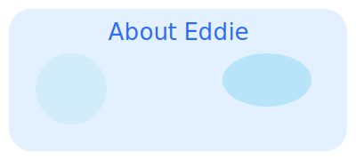

About Eddie (张祚阳)
Eddie Zhang, also known as Zhang Zuoyang, was born in 2007 in Beijing. He is a curious, energetic, and creative young man, passionate about science, sports, travel, and music. This website is created by his father as a special gift for his 18th birthday, summarizing the journey of growth and achievements, and also serving as a showcase for world-class university applications.
关于阳阳
张祚阳，英文名 Eddie，2007年出生于北京。他是一个充满好奇心、活力和创造力的孩子，热爱科学、运动、旅行和音乐。本站由父亲为其18岁生日特别制作，既是成长的回顾，也是世界顶尖大学申请的展示平台。